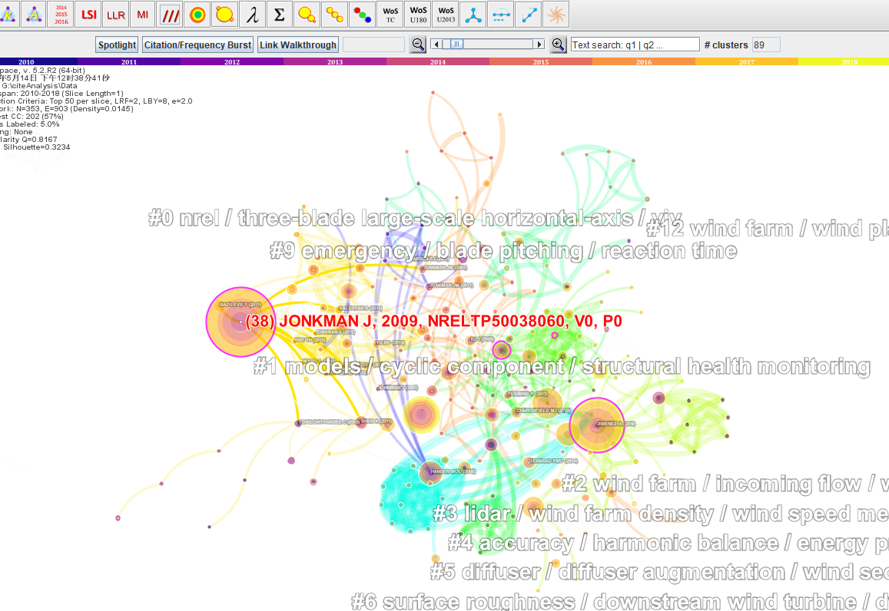
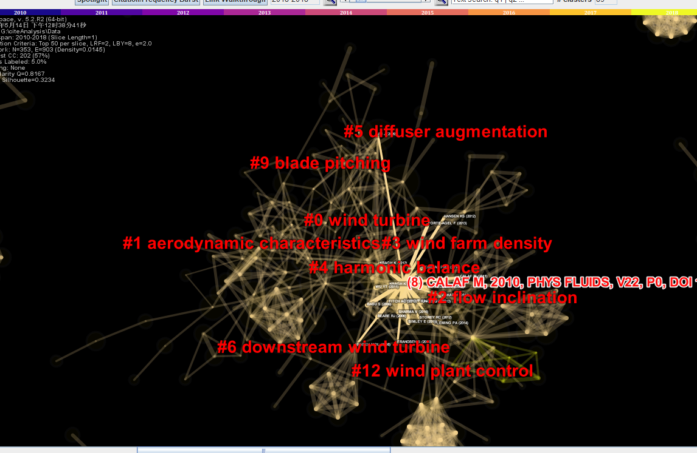
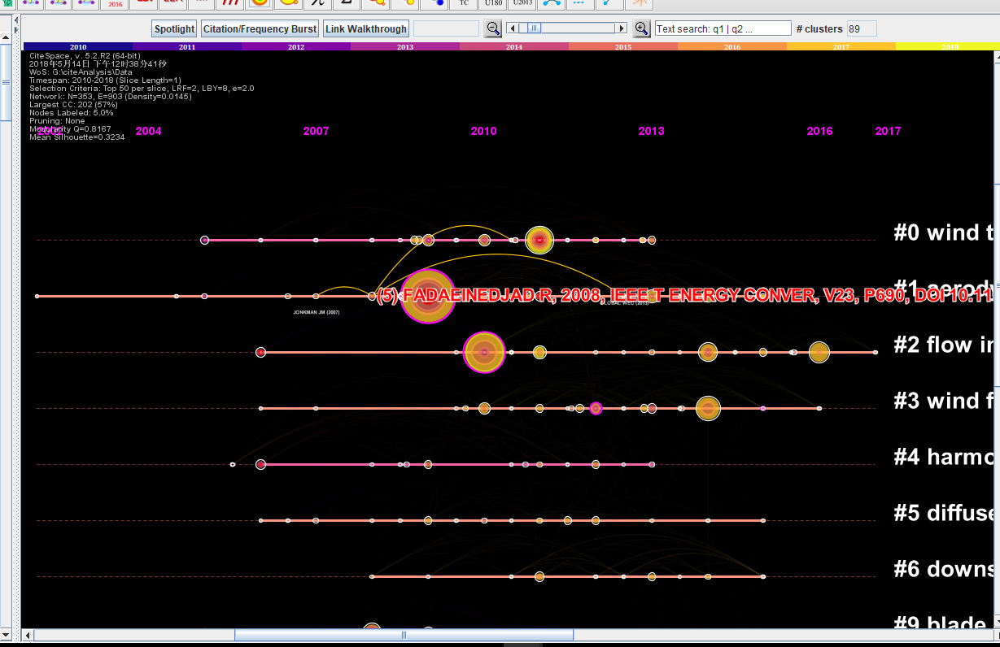
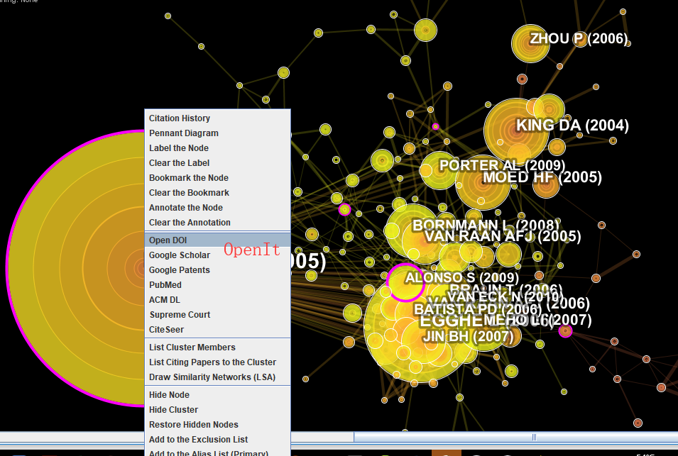
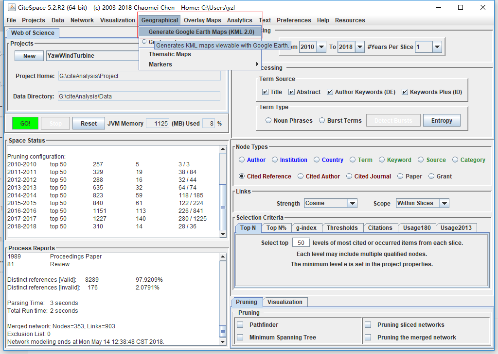
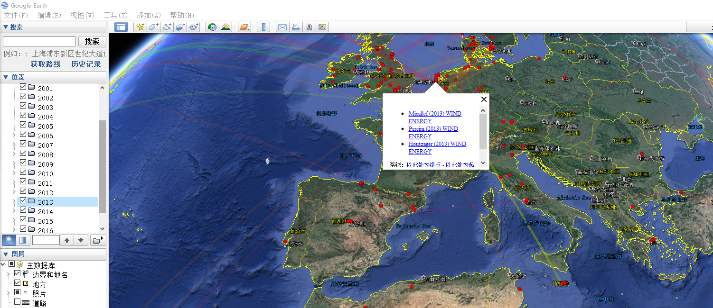

Created: 2018-05-15 周二 22:55
早先的引文搜索有histcite
In order to master such a complex process of science mapping, researchers often need to develop a diverse set of skills and knowledge that may span multiple disciplines.
More in depth analyses of each specialty would be more revealing by incorporating additional methods such as citation context analysis and studies of other aspects of scholarly publications
The underlying analytic process of science mapping serves many practical needs,
CiteSpace provides a systematic methodology for researchers to achieve a good understanding of how scientific fields evolve, to recognize potentially insightful patterns from visually encoded signs, and to synthesize various information so as to capture the state of the art of the domain.
[1] Chen C. Science Mapping: A Systematic Review of the Literature. Journal of Data and Information Science, 2017,2:1-40. [2] 陈美朝官网
下面展示三种图形分别是



你也可以觉得哪个感兴趣，直接打开即可

Q13.1 哪些数据可以做引文分析？
A13.1 有引文数据的包括：Web of Science, Scopus, CSCD, CSSCI. 没有的包括：CNKI, PubMed
结合Google Earth 

时间线显示将每一聚类按时间顺序排列，相邻聚类常常对应相关主题（聚类间共引）。 聚类之间的知识流向也可从时间（色彩）上看到（由冷色到暖色）。
#+ATTR_REVEAL: :frag
- hel
- hef
* Ensure certain elements are never larger than the slide itself *
.reveal img,
.reveal video,
.reveal iframe {
max-width: 95%;
max-height: 95%; }
之所以导航栏不加上颜色，是因为他对于你的内容一点作用都没有，所以干脆不加颜色显示